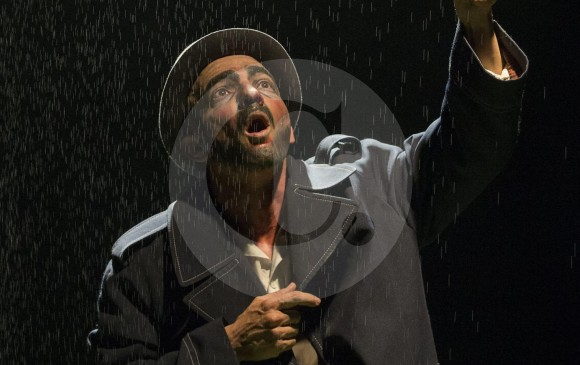

Primer amor, de Samuel Beckett,
estreno en el Teatro Matacandelas
Por: John Saldarriaga Londoño
Publicado en El Colombiano el 16 de julio de 2016

Esta es la segunda obra de Samuel Beckett que ha dirigido Diego Sánchez.
La primera fue Los bellos días, en 1998.
FOTO donaldo zuluaga
Ese viejo hombre que recuerda su vida, evoca el primer amor. Estuvo enamorado de una prostituta no monstruosa, al menos por cinco minutos: el tiempo que le tomó escribir el nombre de ella, Lulu, en una boñiga seca de vaca.
Primer amor es el cuento de Samuel Beckett, escrito en 1945. La historia de un sujeto marginal, como muchos personajes del escritor nacido en Dublín en 1906, narrada en primera persona.
“Nada es más divertido que la desdicha, te lo aseguro...”. Esta idea, de un personaje de Beckett que vive en otra obra, sirve para decir que la historia que en esta va contando el proyecto de hombre negado en tercer debate es de una dolorosa tragedia, sí, pero que va surgiendo con un humor entre negro y sórdido. Expulsado de la casa familiar tras la muerte del padre, él lleva su vida junto a un canal, de dos que tiene la ciudad, según comenta.
Primer amor es también el montaje teatral del Matacandelas, basado en el relato de Beckett.
“En los años noventa vino José Sanchis Sinisterra, dramaturgo y director español, con el grupo Teatro Fronterizo —habla Diego Sánchez, el director del montaje—. Presentó Primer amor en el Matacandelas, con un actor espectacular... Y quedamos fascinados con esa producción”.
Desde ese tiempo, ¡hace 20 años!, en este grupo no hubo matacandelas que apagara la llama de la idea de montar, algún día, esta misma obra. “Nos perseguía”.
Incluso Juan David Toro, el actor que ahora encarna al personaje beckettiano, quedó envenenado con tal poción. Seguían hablando del tema, haciendo experimentos, sin quedar a gusto.
Decidieron no esperar más en la vida para hacer su montaje y basarse en ese trabajo de Sanchis Sinisterra. “Un remake. Común en el cine y en la música, escaso en el teatro”. Una recreación, puede decirse también.
En la puesta en escena del español no se sabe dónde está el hombre aquel. En el relato del irlandés, tampoco. Cuando Diego y Juan David, preparando el montaje, se lo preguntaron, “cambió todo y las cosas tomaron otro rumbo”.
La muerte de su padre, que el personaje asocia, “para bien o para mal”, con su matrimonio —que no es tal, sino solamente el acercamiento a esa mujer lo que llama matrimonio—, las evocaciones a ese pariente que al parecer lo quería, pero sobre todo, la amplia y detallada relación de su vida entre las tumbas, los llevó a creer que el tipo aquel estaba en un cementerio.
Leamos un fragmento:
“En lo personal no tengo nada en contra de los panteones, puedo respirar el aire fresco ahí a mis anchas, tal vez con más ganas que en ningún otro lado, cuando de tomar el aire fresco se trata. (...) Un sandwich, un plátano, me saben más dulces cuando me siento en una lápida, y cuando es hora de orinar de nuevo, como suele suceder, lo hago ahí mismo. O paseo por ahí, con las manos entrelazadas sobre la espalda, entre las losas, inclinado o enderezado, leyendo los epitafios (...)”.
Por eso, en escena —una escenografía marcada por la austeridad, como corresponde—, se ve al personaje sentado en una tumba. Y allí, en el suelo, algunos de sus efectos personales: una olla, una manta, un trapo, el sombrero...
“En un monólogo, se corre el riesgo de limitarse a la emisión del texto —explica el director de escena—. Las acciones físicas ayudan a contar la historia. Por eso, el sujeto, que es un descolgado del sistema, aunque no está hundido en el abandono, tiene lo mínimo y todo solucionado: una olla, que en algún momento le sirve para preparar su desayuno; una manta que, durante su parlamento, recoge, para dar la idea de que ha dormido allí, en ella; un trapo raído, con el que se hace la limpieza matinal; un paraguas... Se le ve tanteando si va a llover y luego abriéndolo”, porque, en efecto, llueve.
Contexto de la Noticia
Juan David Toro, el actor que le presta el ser al personaje del Primer amor, quien no encuentra un mejor medio para expresarse en la vida que en el teatro, cree que el actor, además del cuerpo, le debe entregar hasta el alma, “si es que existe”, a los personajes que interpreta. Cree que el actor es alquien que alcanza su ser durante el tiempo que dura la función. “Trabajamos duro todo el resto del tiempo para alcanzar la esencia de la existencia en la otredad. Ser el otro es lo que de verdad nos gusta”.